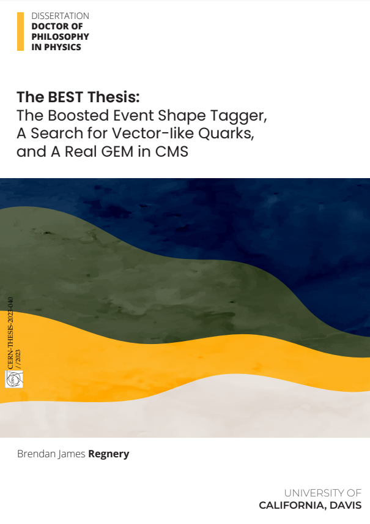

Pubblicazioni Scientifiche
“L’homme a toujours eu besoin de se confronter à des choses qui le dépassent.
C’est en sortant de sa zone de confort qu’on apprend.” - Thomas Pesquet
Pubblicazioni selezionate
Come membro del CMS, sono co-autore di centinaia di articoli.
Per un elenco completo,
si prega di consultare il mio iNSPIRE.
Il mio ORCiD è: 0000-0003-1539-923X
Alcune pubblicazioni selezionate sono elencate di seguito.
| SHADOWS Collaboration. "SHADOWS Technical Proposal" CERN-SPSC-2023-029 ; SPSC-P-367 |
| M. Abbas et al. ”Quality control of mass-produced GEM detectors for the CMS GE1/1 muon upgrade” Nucl. Instrum. Meth. A 1034 (2022) 166716 |
| S. Malik et al. ”Software Training in HEP” Comput. Softw. Big Sci. 5 (2021) 1, 22 |
La mia tesi di dottorato

"La tesi BEST: il Boosted Event Shape Tagger, una ricerca di Vector-like Quarks
e un vero GEM in CMS"
"The BEST Thesis: The Boosted Event Shape Tagger, A Search for Vector-like Quarks,
and A Real GEM in CMS"
Disponibile su CDS.
Presentazioni selezionate
| Seminario | Brendan Regnery. 2023. ”The experimental setup of SHADOWS proposed for ECN3”. CERN Detector Seminar https://indico.cern.ch/event/1334369/ |
| Seminario | Brendan Regnery. 2022. ”A new GEM muon detector in the CMS experiment and the Boosted Event Shape Tagger for jet classification”. Karlsruhe Institute for Technology, Institute of Experimental Particle Physics (ETP) Seminar https://indico.scc.kit.edu/event/3393/ |
| Poster | Brendan Regnery on behalf of the CMS Experiment. 2022. ”Jet tagging with the Boosted Event Shape Tagger at CMS”. BOOST: International Workshop on Boosted Object Phenomenology, Reconstruction, Measurements, and Searches in HEP https://indico.cern.ch/event/1144064/timetable/?view=standard_numbered#35-jet-tagging-with-the-booste |
| Seminario | Brendan Regnery. 2022. ”Installation and commissioning of the new GEM muon detectors in the CMS experiment”. University of Zurich, Experimental Particle and Astro-Particle Physics Seminar https://indico.cern.ch/event/1108957/ |
| Seminario | Brendan Regnery. 2022. ”Installation and commissioning of the new GEM muon detectors in the CMS experiment” L’Universita Degli Studi Di Torino, High Energy Physics Seminar Series |
| Poster | Brendan Regnery on behalf of the CMS Experiment. 2021. ”Installation and commissioning status of the new GEM muon detectors in the CMS experiment”. 11th LHC Students Poster Session https://indico.cern.ch/event/1091653/#16-installation-and-commission |
| Talk | Brendan Regnery on behalf of the CMS Experiment. 2021. ”Installation and commissioning status of the new GEM muon detectors in the CMS experiment”. Meeting of the Division of Particles and Fields of the American Physical Society (DPF21) https://indico.cern.ch/event/1034469/contributions/4431721/ |
| Talk | Brendan Regnery on behalf of the CMS Experiment. 2021. ”Installation and commissioning status of the new GEM muon detectors in the CMS experiment” American Physical Society (APS) April Meeting https://meetings.aps.org/Meeting/APR21/Session/G11.4 |
| Talk | Brendan Regnery on behalf of the CMS Experiment. 2020. ”Status of the GE11 Project”. RD51 Collaboration Meeting and the topical workshop on New Horizons in Time Projection Chambers https://indico.cern.ch/event/889369/timetable/?view=standard#71-status-of-the-ge11-project |
| Talk | Brendan Regnery, Robin Erbacher, John Conway, Justin Pilot. 2018. ”Improvement of Jet Substructure Techniques by Studying HH → W W W W → Hadrons with the CMS Experiment”. Northern California High Energy Physics Exchange (NorCal HEP-Exchange) https://indico.physics.lbl.gov/event/684/contributions/2935/author/3459 |